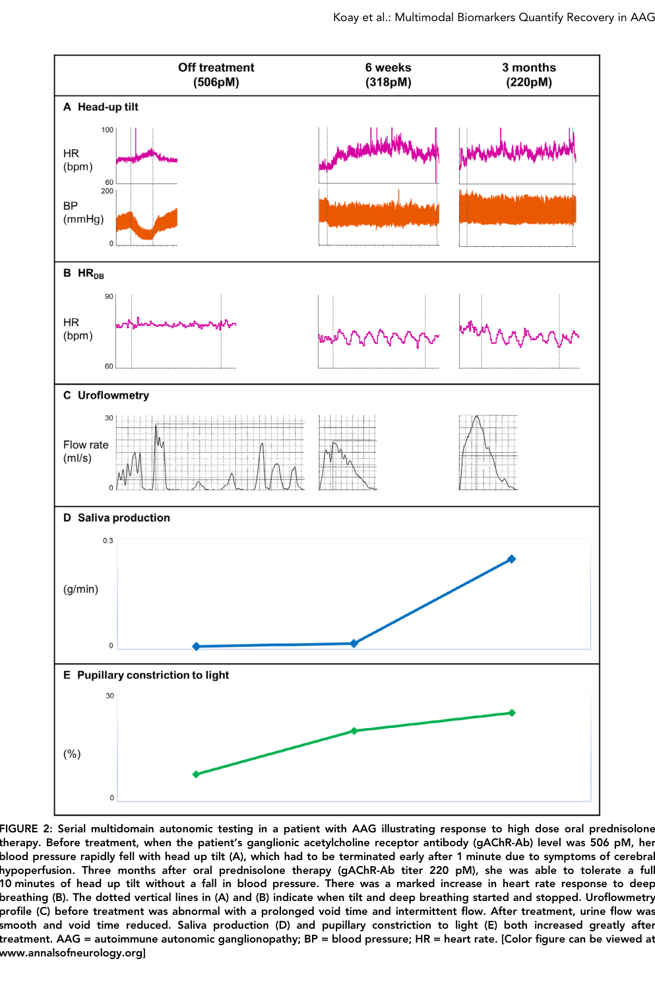

Autoimmune autonomic ganglionopathy is an acquired immune-mediated autonomic neuropathy in which ganglionic acetylcholine receptor autoantibodies, present in a clinically important subset, impair cholinergic synaptic transmission in autonomic ganglia. The resulting postganglionic sympathetic, parasympathetic, and enteric failure causes diffuse pandysautonomia, including orthostatic hypotension, gastrointestinal dysmotility, urinary dysfunction, sweating abnormalities, pupillary dysfunction, and reduced salivary and lacrimal secretion. Orphanet and MONDO align the disorder with acute pandysautonomia, a rare Guillain-Barre syndrome variant.
Ask a research question about Autoimmune Autonomic Ganglionopathy. OpenScientist will conduct autonomous deep research using the Disorder Mechanisms Knowledge Base and PubMed literature (typically 10-30 minutes).
Do not include personal health information in your question. Questions and results are cached in your browser's local storage.
name: Autoimmune Autonomic Ganglionopathy
creation_date: "2026-05-16T20:19:02Z"
updated_date: "2026-05-17T06:12:22Z"
category: Autoimmune
synonyms:
- AAG
- Acute pandysautonomia
- Acute panautonomic Guillain-Barre syndrome
- Acute panautonomic neuropathy
- Autoimmune autonomic neuropathy
description: >-
Autoimmune autonomic ganglionopathy is an acquired immune-mediated autonomic
neuropathy in which ganglionic acetylcholine receptor autoantibodies, present
in a clinically important subset, impair cholinergic synaptic transmission in
autonomic ganglia. The resulting postganglionic sympathetic,
parasympathetic, and enteric failure causes diffuse pandysautonomia,
including orthostatic hypotension, gastrointestinal dysmotility, urinary
dysfunction, sweating abnormalities, pupillary dysfunction, and reduced
salivary and lacrimal secretion. Orphanet and MONDO align the disorder with
acute pandysautonomia, a rare Guillain-Barre syndrome variant.
disease_term:
preferred_term: autoimmune autonomic ganglionopathy
term:
id: MONDO:0016499
label: autoimmune autonomic ganglionopathy
parents:
- Guillain-Barre Syndrome
- Autoimmune Disease
- Neurological Disease
mappings:
mondo_mappings:
- term:
id: MONDO:0016499
label: autoimmune autonomic ganglionopathy
mapping_predicate: skos:exactMatch
mapping_source: MONDO
mapping_justification: MONDO exact match for Orphanet ORPHA:231457.
definitions:
- name: Orphanet acute pandysautonomia definition
definition_type: OTHER
description: >-
A rare variant of Guillain-Barré syndrome characterized by acute
post-ganglionic sympathetic and parasympathetic failure presenting several
weeks after acute infection with gastrointestinal symptoms (abdominal pain,
vomiting, constipation, diarrhea, gastroparesis, ileus), orthostatic
hypotension, erectile dysfunction, urinary frequency, urgency or retention,
vasomotor instability with acrocyanosis and reduced salivation, lacrimation
and sweating.
evidence:
- reference: ORPHA:231457
reference_title: "Acute pandysautonomia (Orphanet structured-database record)"
supports: SUPPORT
evidence_source: OTHER
snippet: "A rare variant of Guillain-Barré syndrome characterized by acute post-ganglionic sympathetic and parasympathetic failure"
explanation: Orphanet provides the disease definition linked to MONDO:0016499.
has_subtypes:
- name: Alpha3-positive AAG
display_name: gAChRalpha3-positive AAG
description: >-
Seropositive AAG subgroup with autoantibodies against the ganglionic
acetylcholine receptor alpha3 subunit.
evidence:
- reference: PMID:31924415
reference_title: "A comprehensive analysis of the clinical characteristics and laboratory features in 179 patients with autoimmune autonomic ganglionopathy."
supports: SUPPORT
evidence_source: HUMAN_CLINICAL
snippet: "including 116 gAChRα3-positive, 13 gAChRβ4-positive, and 50 double antibody-positive patients."
explanation: The 179-patient cohort defines the alpha3-positive serologic subgroup.
- name: Beta4-positive AAG
display_name: gAChRbeta4-positive AAG
description: >-
Seropositive AAG subgroup with autoantibodies against the ganglionic
acetylcholine receptor beta4 subunit.
evidence:
- reference: PMID:31924415
reference_title: "A comprehensive analysis of the clinical characteristics and laboratory features in 179 patients with autoimmune autonomic ganglionopathy."
supports: SUPPORT
evidence_source: HUMAN_CLINICAL
snippet: "including 116 gAChRα3-positive, 13 gAChRβ4-positive, and 50 double antibody-positive patients."
explanation: The 179-patient cohort defines the beta4-positive serologic subgroup.
- name: Double-positive AAG
display_name: gAChRalpha3/gAChRbeta4 double-positive AAG
description: >-
Seropositive AAG subgroup with both alpha3 and beta4 ganglionic
acetylcholine receptor autoantibodies.
evidence:
- reference: PMID:31924415
reference_title: "A comprehensive analysis of the clinical characteristics and laboratory features in 179 patients with autoimmune autonomic ganglionopathy."
supports: SUPPORT
evidence_source: HUMAN_CLINICAL
snippet: "including 116 gAChRα3-positive, 13 gAChRβ4-positive, and 50 double antibody-positive patients."
explanation: The 179-patient cohort identifies double antibody-positive patients as a distinct serologic subgroup.
progression:
- phase: Acute or subacute pandysautonomia
age_range: All ages
notes: >-
Orphanet records all ages as possible onset and describes presentation
several weeks after an acute infection.
evidence:
- reference: ORPHA:231457
reference_title: "Acute pandysautonomia (Orphanet structured-database record)"
supports: SUPPORT
evidence_source: OTHER
snippet: "Age of onset: All ages"
explanation: Orphanet records all ages as the onset category for acute pandysautonomia.
- reference: ORPHA:231457
reference_title: "Acute pandysautonomia (Orphanet structured-database record)"
supports: SUPPORT
evidence_source: OTHER
snippet: "presenting several weeks after acute infection"
explanation: Orphanet describes a post-infectious interval before clinical presentation.
pathophysiology:
- name: Ganglionic Acetylcholine Receptor Autoantibodies
description: >-
Circulating autoantibodies against ganglionic nicotinic acetylcholine
receptors, especially alpha3-containing receptors in autonomic ganglia,
identify a seropositive subset and correlate with autonomic failure
severity.
biological_processes:
- preferred_term: humoral immune response mediated by circulating immunoglobulin
term:
id: GO:0002455
label: humoral immune response mediated by circulating immunoglobulin
modifier: INCREASED
cell_types:
- preferred_term: autonomic neuron
term:
id: CL:0000107
label: autonomic neuron
locations:
- preferred_term: autonomic ganglion
term:
id: UBERON:0001805
label: autonomic ganglion
evidence:
- reference: PMID:10995864
reference_title: "Autoantibodies to ganglionic acetylcholine receptors in autoimmune autonomic neuropathies."
supports: SUPPORT
evidence_source: HUMAN_CLINICAL
snippet: "Seropositivity for antibodies that bind to or block ganglionic acetylcholine receptors identifies patients with various forms of autoimmune autonomic neuropathy and distinguishes these disorders from other types of dysautonomia."
explanation: This foundational patient-serology study identifies ganglionic acetylcholine receptor antibodies as markers of autoimmune autonomic neuropathy.
- reference: PMID:31761837
reference_title: "[Autoimmune autonomic ganglionopathy]."
supports: SUPPORT
evidence_source: HUMAN_CLINICAL
snippet: "Approximately half of the patients with AAG have the autoantibodies against the neuronal nicotinic acetylcholine receptor (AChR) in autonomic ganglia."
explanation: This review summarizes the approximate seropositive fraction and target receptor location.
- reference: PMID:31924415
reference_title: "A comprehensive analysis of the clinical characteristics and laboratory features in 179 patients with autoimmune autonomic ganglionopathy."
supports: SUPPORT
evidence_source: HUMAN_CLINICAL
snippet: "A total of 179 patients tested positive for antibodies, including 116 gAChRα3-positive, 13 gAChRβ4-positive, and 50 double antibody-positive patients."
explanation: This large seropositive cohort supports alpha3 and beta4 ganglionic AChR antibody subgroups.
downstream:
- target: Antibody-Mediated Ganglionic Acetylcholine Receptor Dysfunction
causal_link_type: DIRECT
description: Patient IgG and anti-alpha3 antibodies can reduce functional ganglionic AChR current and surface receptor availability.
evidence:
- reference: PMID:17536048
reference_title: "Autoimmune autonomic ganglionopathy: IgG effects on ganglionic acetylcholine receptor current."
supports: SUPPORT
evidence_source: IN_VITRO
snippet: "IgG from seven patients with AAG all produced a progressive decline in whole-cell ganglionic AChR current, whereas IgG from control subjects had no effect."
explanation: Patient IgG directly reduced ganglionic AChR current, supporting a causal link from autoantibodies to receptor dysfunction.
- name: Antibody-Mediated Ganglionic Acetylcholine Receptor Dysfunction
description: >-
Patient IgG can block or modulate ganglionic acetylcholine receptors,
including internalization of surface receptors, reducing postsynaptic
nicotinic receptor function at autonomic ganglia.
molecular_functions:
- preferred_term: acetylcholine receptor activity
term:
id: GO:0015464
label: acetylcholine receptor activity
modifier: DECREASED
biological_processes:
- preferred_term: acetylcholine receptor signaling pathway
term:
id: GO:0095500
label: acetylcholine receptor signaling pathway
modifier: DECREASED
- preferred_term: cholinergic synaptic transmission
term:
id: GO:0007271
label: synaptic transmission, cholinergic
modifier: DECREASED
cell_types:
- preferred_term: autonomic neuron
term:
id: CL:0000107
label: autonomic neuron
locations:
- preferred_term: autonomic ganglion
term:
id: UBERON:0001805
label: autonomic ganglion
evidence:
- reference: PMID:17536048
reference_title: "Autoimmune autonomic ganglionopathy: IgG effects on ganglionic acetylcholine receptor current."
supports: SUPPORT
evidence_source: IN_VITRO
snippet: "IgG from seven patients with AAG all produced a progressive decline in whole-cell ganglionic AChR current, whereas IgG from control subjects had no effect."
explanation: Patient IgG directly reduced ganglionic AChR current in a human cell assay.
- reference: PMID:23313381
reference_title: "Autoantibody-induced internalization of nicotinic acetylcholine receptor α3 subunit exogenously expressed in human embryonic kidney cells."
supports: SUPPORT
evidence_source: IN_VITRO
snippet: "These data support the hypothesis that anti-α3 subunit autoantibody induces internalization of cell-surface nAChRs and thereby impairs synaptic transmission."
explanation: Cell-based evidence supports receptor internalization as a mechanism for impaired transmission.
- reference: PMID:18951069
reference_title: "Autonomic ganglia, acetylcholine receptor antibodies, and autoimmune ganglionopathy."
supports: SUPPORT
evidence_source: OTHER
snippet: "AAG is an antibody-mediated neurological disorder. Antibodies from patients with AAG inhibit ganglionic AChR currents and impair transmission in autonomic ganglia."
explanation: This mechanistic review links patient antibodies to impaired ganglionic AChR currents and autonomic ganglion transmission.
downstream:
- target: Postganglionic Sympathetic and Parasympathetic Failure
causal_link_type: DIRECT
description: Reduced ganglionic cholinergic signaling disrupts sympathetic, parasympathetic, and enteric autonomic outflow.
evidence:
- reference: PMID:18951069
reference_title: "Autonomic ganglia, acetylcholine receptor antibodies, and autoimmune ganglionopathy."
supports: SUPPORT
evidence_source: OTHER
snippet: "Impaired cholinergic ganglionic synaptic transmission is one important cause of autonomic failure."
explanation: This review directly supports the link from impaired ganglionic cholinergic signaling to autonomic failure.
- name: Postganglionic Sympathetic and Parasympathetic Failure
description: >-
Failure of postganglionic sympathetic and parasympathetic autonomic output
links autonomic ganglion dysfunction to cardiovascular, sudomotor,
secretomotor, urinary, gastrointestinal, and pupillary manifestations.
biological_processes:
- preferred_term: cholinergic synaptic transmission
term:
id: GO:0007271
label: synaptic transmission, cholinergic
modifier: DECREASED
cell_types:
- preferred_term: autonomic neuron
term:
id: CL:0000107
label: autonomic neuron
locations:
- preferred_term: autonomic ganglion
term:
id: UBERON:0001805
label: autonomic ganglion
evidence:
- reference: ORPHA:231457
reference_title: "Acute pandysautonomia (Orphanet structured-database record)"
supports: SUPPORT
evidence_source: OTHER
snippet: "acute post-ganglionic sympathetic and parasympathetic failure"
explanation: The Orphanet definition directly supports postganglionic sympathetic and parasympathetic failure as the defining mechanism.
- reference: PMID:18951069
reference_title: "Autonomic ganglia, acetylcholine receptor antibodies, and autoimmune ganglionopathy."
supports: SUPPORT
evidence_source: OTHER
snippet: "Patients with high levels of ganglionic AChR antibodies typically present with rapid onset of severe autonomic failure, with orthostatic hypotension, gastrointestinal dysmotility, anhidrosis, bladder dysfunction and sicca symptoms."
explanation: This review connects high ganglionic AChR antibody levels with the core autonomic failure phenotype.
phenotypes:
- name: Orthostatic Hypotension
category: Clinical
description: Orthostatic blood-pressure failure caused by autonomic dysfunction.
phenotype_term:
preferred_term: Orthostatic hypotension due to autonomic dysfunction
term:
id: HP:0004926
label: Orthostatic hypotension due to autonomic dysfunction
evidence:
- reference: ORPHA:231457
reference_title: "Acute pandysautonomia (Orphanet structured-database record)"
supports: SUPPORT
evidence_source: OTHER
snippet: "orthostatic hypotension"
explanation: Orphanet lists orthostatic hypotension among acute pandysautonomia manifestations.
- reference: PMID:18951069
reference_title: "Autonomic ganglia, acetylcholine receptor antibodies, and autoimmune ganglionopathy."
supports: SUPPORT
evidence_source: OTHER
snippet: "rapid onset of severe autonomic failure, with orthostatic hypotension, gastrointestinal dysmotility, anhidrosis, bladder dysfunction and sicca symptoms."
explanation: This review places orthostatic hypotension among the core manifestations associated with high ganglionic AChR antibody levels.
- name: Gastrointestinal Dysmotility
category: Clinical
description: >-
Autonomic gastrointestinal involvement may include constipation, diarrhea,
gastroparesis, abdominal pain, vomiting, and ileus.
phenotype_term:
preferred_term: Gastrointestinal dysmotility
term:
id: HP:0002579
label: Gastrointestinal dysmotility
evidence:
- reference: ORPHA:231457
reference_title: "Acute pandysautonomia (Orphanet structured-database record)"
supports: SUPPORT
evidence_source: OTHER
snippet: "gastrointestinal symptoms (abdominal pain, vomiting, constipation, diarrhea, gastroparesis, ileus)"
explanation: Orphanet describes a broad gastrointestinal dysautonomia phenotype including constipation.
- reference: PMID:34249013
reference_title: "A Flow Cytometric Assay to Detect Functional Ganglionic Acetylcholine Receptor Antibodies by Immunomodulation in Autoimmune Autonomic Ganglionopathy."
supports: SUPPORT
evidence_source: OTHER
snippet: "most commonly leading to orthostatic hypotension, gastrointestinal dysmotility, degrees of anhidrosis"
explanation: This AAG assay paper summarizes gastrointestinal dysmotility as a common clinical manifestation.
- name: Gastroparesis
category: Clinical
description: Delayed gastric emptying from autonomic gastrointestinal dysfunction.
phenotype_term:
preferred_term: Gastroparesis
term:
id: HP:0002578
label: Gastroparesis
evidence:
- reference: ORPHA:231457
reference_title: "Acute pandysautonomia (Orphanet structured-database record)"
supports: SUPPORT
evidence_source: OTHER
snippet: "gastroparesis"
explanation: Orphanet lists gastroparesis among gastrointestinal symptoms.
- reference: PMID:12773498
reference_title: "Experimental autoimmune autonomic neuropathy."
supports: SUPPORT
evidence_source: MODEL_ORGANISM
snippet: "severe panautonomic failure with fixed mydriasis, gastroparesis, dry eyes, impaired heart rate variability, hypotension, and low plasma catecholamines."
explanation: The experimental autoimmune autonomic neuropathy model recapitulates gastroparesis as part of panautonomic failure.
- name: Urinary Retention
category: Clinical
description: Autonomic bladder dysfunction can cause urinary retention.
phenotype_term:
preferred_term: Urinary retention
term:
id: HP:0000016
label: Urinary retention
evidence:
- reference: ORPHA:231457
reference_title: "Acute pandysautonomia (Orphanet structured-database record)"
supports: SUPPORT
evidence_source: OTHER
snippet: "urinary frequency, urgency or retention"
explanation: Orphanet lists urinary retention as part of the autonomic urinary phenotype.
- reference: PMID:18268189
reference_title: "Combined immunomodulatory therapy in autoimmune autonomic ganglionopathy."
supports: SUPPORT
evidence_source: HUMAN_CLINICAL
snippet: "Patients present with symptoms of autonomic failure, including syncope, orthostatic hypotension, bowel and bladder hypomotility, pupillary dysfunction, and dry mouth and eyes."
explanation: This prospective case-series abstract includes bladder hypomotility among AAG autonomic-failure symptoms.
- name: Reduced Sweating
category: Clinical
description: Sudomotor failure may manifest as reduced or absent sweating.
phenotype_term:
preferred_term: Anhidrosis
term:
id: HP:0000970
label: Anhidrosis
evidence:
- reference: ORPHA:231457
reference_title: "Acute pandysautonomia (Orphanet structured-database record)"
supports: SUPPORT
evidence_source: OTHER
snippet: "reduced salivation, lacrimation and sweating"
explanation: Orphanet lists reduced sweating among secretomotor/sudomotor manifestations.
- reference: PMID:18951069
reference_title: "Autonomic ganglia, acetylcholine receptor antibodies, and autoimmune ganglionopathy."
supports: SUPPORT
evidence_source: OTHER
snippet: "orthostatic hypotension, gastrointestinal dysmotility, anhidrosis, bladder dysfunction and sicca symptoms."
explanation: This review identifies anhidrosis as part of the antibody-associated autonomic failure syndrome.
- name: Reduced Salivation
category: Clinical
description: Secretomotor dysfunction may cause reduced salivation and dry mouth.
phenotype_term:
preferred_term: Xerostomia
term:
id: HP:0000217
label: Xerostomia
evidence:
- reference: ORPHA:231457
reference_title: "Acute pandysautonomia (Orphanet structured-database record)"
supports: SUPPORT
evidence_source: OTHER
snippet: "reduced salivation, lacrimation and sweating"
explanation: Orphanet lists reduced salivation among secretomotor manifestations.
- reference: PMID:18268189
reference_title: "Combined immunomodulatory therapy in autoimmune autonomic ganglionopathy."
supports: SUPPORT
evidence_source: HUMAN_CLINICAL
snippet: "Patients present with symptoms of autonomic failure, including syncope, orthostatic hypotension, bowel and bladder hypomotility, pupillary dysfunction, and dry mouth and eyes."
explanation: This case-series abstract includes dry mouth among AAG autonomic-failure symptoms.
- name: Reduced Lacrimation
category: Clinical
description: Secretomotor dysfunction may reduce tear production and cause dry eyes.
phenotype_term:
preferred_term: Keratoconjunctivitis sicca
term:
id: HP:0001097
label: Keratoconjunctivitis sicca
evidence:
- reference: ORPHA:231457
reference_title: "Acute pandysautonomia (Orphanet structured-database record)"
supports: SUPPORT
evidence_source: OTHER
snippet: "reduced salivation, lacrimation and sweating"
explanation: Orphanet lists reduced lacrimation among secretomotor manifestations.
- reference: PMID:18268189
reference_title: "Combined immunomodulatory therapy in autoimmune autonomic ganglionopathy."
supports: SUPPORT
evidence_source: HUMAN_CLINICAL
snippet: "Patients present with symptoms of autonomic failure, including syncope, orthostatic hypotension, bowel and bladder hypomotility, pupillary dysfunction, and dry mouth and eyes."
explanation: This case-series abstract includes dry eyes among AAG autonomic-failure symptoms.
- name: Acrocyanosis
category: Clinical
description: Vasomotor instability can manifest as acrocyanosis.
phenotype_term:
preferred_term: Acrocyanosis
term:
id: HP:0001063
label: Acrocyanosis
evidence:
- reference: ORPHA:231457
reference_title: "Acute pandysautonomia (Orphanet structured-database record)"
supports: SUPPORT
evidence_source: OTHER
snippet: "vasomotor instability with acrocyanosis"
explanation: Orphanet lists acrocyanosis with vasomotor instability.
- name: Abnormal Pupillary Light Reflex
category: Clinical
description: Pupillary parasympathetic involvement can impair the pupillary light reflex.
phenotype_term:
preferred_term: Abnormal pupillary light reflex
term:
id: HP:0007695
label: Abnormal pupillary light reflex
evidence:
- reference: PMID:18951069
reference_title: "Autonomic ganglia, acetylcholine receptor antibodies, and autoimmune ganglionopathy."
supports: SUPPORT
evidence_source: OTHER
snippet: "Impaired pupillary light reflex is often seen."
explanation: This review identifies impaired pupillary light reflex as a common AAG manifestation.
- reference: PMID:18268189
reference_title: "Combined immunomodulatory therapy in autoimmune autonomic ganglionopathy."
supports: SUPPORT
evidence_source: HUMAN_CLINICAL
snippet: "Patients present with symptoms of autonomic failure, including syncope, orthostatic hypotension, bowel and bladder hypomotility, pupillary dysfunction, and dry mouth and eyes."
explanation: This case-series abstract includes pupillary dysfunction among AAG autonomic-failure symptoms.
- name: Sensory Disturbance
category: Neurological
description: Extra-autonomic sensory involvement can occur in seropositive AAG.
phenotype_term:
preferred_term: Sensory neuropathy
term:
id: HP:0000763
label: Sensory neuropathy
evidence:
- reference: PMID:31924415
reference_title: "A comprehensive analysis of the clinical characteristics and laboratory features in 179 patients with autoimmune autonomic ganglionopathy."
supports: SUPPORT
evidence_source: HUMAN_CLINICAL
snippet: "Extra-autonomic manifestations including sensory disturbance, central nervous system involvement, endocrine disorders, autoimmune diseases, and tumours were present in 118 patients (83%)."
explanation: This large seropositive AAG cohort identifies sensory disturbance among extra-autonomic manifestations present in most patients.
biochemical:
- name: Serum Ganglionic Acetylcholine Receptor Antibodies
presence: Positive in subset
notes: >-
Seropositivity increases diagnostic confidence but absence of detectable
ganglionic AChR antibodies does not exclude clinically compatible AAG.
evidence:
- reference: PMID:31761837
reference_title: "[Autoimmune autonomic ganglionopathy]."
supports: SUPPORT
evidence_source: HUMAN_CLINICAL
snippet: "Approximately half of the patients with AAG have the autoantibodies against the neuronal nicotinic acetylcholine receptor (AChR) in autonomic ganglia."
explanation: This review supports serum ganglionic AChR antibody positivity in about half of patients.
- reference: PMID:10995864
reference_title: "Autoantibodies to ganglionic acetylcholine receptors in autoimmune autonomic neuropathies."
supports: SUPPORT
evidence_source: HUMAN_CLINICAL
snippet: "Ganglionic-receptor-binding antibodies were found in 19 of 46 patients with idiopathic or paraneoplastic autonomic neuropathy (41 percent)"
explanation: This original serology cohort supports ganglionic receptor antibody detection in autoimmune autonomic neuropathy.
- reference: PMID:31924415
reference_title: "A comprehensive analysis of the clinical characteristics and laboratory features in 179 patients with autoimmune autonomic ganglionopathy."
supports: SUPPORT
evidence_source: HUMAN_CLINICAL
snippet: "A total of 179 patients tested positive for antibodies, including 116 gAChRα3-positive, 13 gAChRβ4-positive, and 50 double antibody-positive patients."
explanation: This large Japanese cohort documents alpha3, beta4, and double-positive gAChR antibody groups.
treatments:
- name: Immunotherapy
description: >-
Immune-directed therapy is used for seropositive and clinically compatible
AAG, with objective cohort data showing improvement across autonomic
symptom and testing domains after treatment.
treatment_term:
preferred_term: immunotherapy
term:
id: MAXO:0001002
label: immunotherapy procedure
target_mechanisms:
- target: Antibody-Mediated Ganglionic Acetylcholine Receptor Dysfunction
treatment_effect: MODULATES
description: Immunotherapy is intended to reduce the antibody-mediated autonomic transmission defect.
evidence:
- reference: PMID:31093868
reference_title: "Autoimmune autonomic neuropathies and ganglionopathies: epidemiology, pathophysiology, and therapeutic advances."
supports: SUPPORT
evidence_source: OTHER
snippet: "antibodies against the ganglionic nicotinic acetylcholine receptor impair autonomic transmission, causing autonomic failure, which responds to immunotherapy."
explanation: This review links AAG's antibody-mediated transmission defect with clinical response to immunotherapy.
evidence:
- reference: PMID:31093868
reference_title: "Autoimmune autonomic neuropathies and ganglionopathies: epidemiology, pathophysiology, and therapeutic advances."
supports: SUPPORT
evidence_source: OTHER
snippet: "autoimmune autonomic ganglionopathy (AAG), in which antibodies against the ganglionic nicotinic acetylcholine receptor impair autonomic transmission, causing autonomic failure, which responds to immunotherapy."
explanation: This review summarizes immunotherapy-responsive AAG as the classic autoimmune autonomic ganglionopathy.
- reference: PMID:33438240
reference_title: "Multimodal Biomarkers Quantify Recovery in Autoimmune Autonomic Ganglionopathy."
supports: SUPPORT
evidence_source: HUMAN_CLINICAL
snippet: "After immunotherapy, there were significant improvements in orthostatic intolerance ratio"
explanation: This seropositive AAG cohort provides objective autonomic biomarker evidence of improvement after immunotherapy.
- name: Intravenous Immunoglobulin
description: >-
IVIG is used as an immunomodulatory therapy in AAG, often as initial therapy
and sometimes as part of a longer combined immunotherapy plan.
treatment_term:
preferred_term: Intravenous Immunoglobulin Therapy
term:
id: NCIT:C121331
label: Intravenous Immunoglobulin Therapy
evidence:
- reference: PMID:19056323
reference_title: "Immunotherapy for autoimmune autonomic ganglionopathy."
supports: SUPPORT
evidence_source: HUMAN_CLINICAL
snippet: "Treatment with intravenous immunoglobulin (IVIG) or plasma exchange (PE) has been reported to be effective in single case reports and recent case series."
explanation: This treatment review summarizes human case-report and case-series experience with IVIG.
- name: Plasma Exchange
description: >-
Plasma exchange can acutely reduce circulating ganglionic AChR antibodies
and improve autonomic signs, although sustained benefit may require combined
immunosuppression.
treatment_term:
preferred_term: Plasmapheresis
term:
id: NCIT:C15304
label: Plasmapheresis
target_mechanisms:
- target: Ganglionic Acetylcholine Receptor Autoantibodies
treatment_effect: INHIBITS
description: Plasma exchange lowers circulating pathogenic antibody burden.
evidence:
- reference: PMID:18268189
reference_title: "Combined immunomodulatory therapy in autoimmune autonomic ganglionopathy."
supports: SUPPORT
evidence_source: HUMAN_CLINICAL
snippet: "Mean antibody level was 7.92 nmol/L on combined immunosuppressive therapy alone and dropped to 0.5 nmol/L after plasmapheresis."
explanation: The case series directly shows lower antibody levels after plasmapheresis.
evidence:
- reference: PMID:18268189
reference_title: "Combined immunomodulatory therapy in autoimmune autonomic ganglionopathy."
supports: SUPPORT
evidence_source: HUMAN_CLINICAL
snippet: "In patients with autoimmune autonomic ganglionopathy, combining immunosuppressive medications prednisone and mycophenolate mofetil with plasmapheresis provides substantial and sustained clinical improvement that was not seen using either treatment alone."
explanation: Prospective case-series evidence supports combined immunosuppression plus plasmapheresis for sustained improvement.
- reference: PMID:19399547
reference_title: "Autoimmune autonomic ganglionopathy: treatment by plasma exchanges and rituximab."
supports: SUPPORT
evidence_source: HUMAN_CLINICAL
snippet: "In conclusion, total PLEX temporarily improved clinical and laboratory abnormalities in this patient with AAG."
explanation: A detailed case report supports temporary clinical and laboratory improvement after plasma exchange.
- name: Prednisone
description: >-
Prednisone was used as part of combined maintenance immunosuppression with
mycophenolate mofetil and plasma exchange for sustained clinical benefit.
treatment_term:
preferred_term: pharmacotherapy
term:
id: MAXO:0000058
label: pharmacotherapy
therapeutic_agent:
- preferred_term: prednisone
term:
id: CHEBI:8382
label: prednisone
evidence:
- reference: PMID:18268189
reference_title: "Combined immunomodulatory therapy in autoimmune autonomic ganglionopathy."
supports: SUPPORT
evidence_source: HUMAN_CLINICAL
snippet: "In patients with autoimmune autonomic ganglionopathy, combining immunosuppressive medications prednisone and mycophenolate mofetil with plasmapheresis provides substantial and sustained clinical improvement that was not seen using either treatment alone."
explanation: The prospective case series supports prednisone as part of combined immunosuppressive therapy for sustained AAG improvement.
- name: Mycophenolate Mofetil
description: >-
Mycophenolate mofetil was used with prednisone as maintenance
immunosuppression alongside plasma exchange for sustained clinical benefit.
treatment_term:
preferred_term: pharmacotherapy
term:
id: MAXO:0000058
label: pharmacotherapy
therapeutic_agent:
- preferred_term: mycophenolate mofetil
term:
id: CHEBI:8764
label: mycophenolate mofetil
evidence:
- reference: PMID:18268189
reference_title: "Combined immunomodulatory therapy in autoimmune autonomic ganglionopathy."
supports: SUPPORT
evidence_source: HUMAN_CLINICAL
snippet: "In patients with autoimmune autonomic ganglionopathy, combining immunosuppressive medications prednisone and mycophenolate mofetil with plasmapheresis provides substantial and sustained clinical improvement that was not seen using either treatment alone."
explanation: The prospective case series supports mycophenolate mofetil as part of combined immunosuppressive therapy for sustained AAG improvement.
- name: Rituximab
description: >-
Rituximab is reported for refractory or relapsing AAG, targeting B-cell
mediated autoantibody production after or alongside other immunotherapies.
treatment_term:
preferred_term: pharmacotherapy
term:
id: MAXO:0000058
label: pharmacotherapy
therapeutic_agent:
- preferred_term: rituximab
term:
id: NCIT:C1702
label: Rituximab
target_mechanisms:
- target: Ganglionic Acetylcholine Receptor Autoantibodies
treatment_effect: INHIBITS
description: CD20+ B-cell depletion may reduce pathogenic antibody production.
evidence:
- reference: PMID:19399547
reference_title: "Autoimmune autonomic ganglionopathy: treatment by plasma exchanges and rituximab."
supports: SUPPORT
evidence_source: HUMAN_CLINICAL
snippet: "Rituximab resulted in minor decreases in antibody level and persistent symptomatic improvement over at least several months."
explanation: This AAG case report links rituximab to lower antibody levels and sustained symptomatic improvement.
evidence:
- reference: PMID:19399547
reference_title: "Autoimmune autonomic ganglionopathy: treatment by plasma exchanges and rituximab."
supports: SUPPORT
evidence_source: HUMAN_CLINICAL
snippet: "Rituximab resulted in minor decreases in antibody level and persistent symptomatic improvement over at least several months."
explanation: This case report supports rituximab as a later-line immunotherapy option.
clinical_trials:
- name: NCT01522235
phase: PHASE_II
status: COMPLETED
description: >-
Completed phase 2/3 randomized, double-blind placebo-controlled trial
evaluating intravenous immunoglobulin for orthostatic hypotension symptoms
and quality of life in AAG.
target_phenotypes:
- preferred_term: Orthostatic hypotension due to autonomic dysfunction
term:
id: HP:0004926
label: Orthostatic hypotension due to autonomic dysfunction
evidence:
- reference: clinicaltrials:NCT01522235
reference_title: "A Double-blind, Randomized, Placebo-controlled Trial to Evaluate the Efficacy of Intravenous Immunoglobulin Therapy in Autoimmune Autonomic Ganglionopathy."
supports: SUPPORT
evidence_source: HUMAN_CLINICAL
snippet: "helps to improve the symptoms of orthostatic hypotension (sudden fall in blood pressure when a person stands up) and quality of life"
explanation: ClinicalTrials.gov describes the IVIG trial as evaluating orthostatic hypotension symptoms and quality of life in AAG.
datasets: []
references:
- reference: DOI:10.1016/b978-008045046-9.00625-2
title: Autoimmune Autonomic Neuropathy
found_in:
- Autoimmune_Autonomic_Ganglionopathy-deep-research-falcon.md
- Autoimmune_Autonomic_Ganglionopathy-deep-research-cyberian-codex.md
findings: []
- reference: DOI:10.1080/14737175.2018.1540304
title: 'Autoimmune autonomic ganglionopathy: an update on diagnosis and treatment'
found_in:
- Autoimmune_Autonomic_Ganglionopathy-deep-research-falcon.md
- Autoimmune_Autonomic_Ganglionopathy-deep-research-cyberian-codex.md
findings: []
- reference: DOI:10.1212/wnl.0b013e3181a92b52
title: Efficacy of immunotherapy in seropositive and seronegative putative autoimmune autonomic ganglionopathy
found_in:
- Autoimmune_Autonomic_Ganglionopathy-deep-research-falcon.md
- Autoimmune_Autonomic_Ganglionopathy-deep-research-cyberian-codex.md
findings: []
- reference: DOI:10.1212/wnl.50.6.1806
title: Neuronal nicotinic ACh receptor antibody in subacute autonomic neuropathy and cancer‐related syndromes
found_in:
- Autoimmune_Autonomic_Ganglionopathy-deep-research-falcon.md
- Autoimmune_Autonomic_Ganglionopathy-deep-research-cyberian-codex.md
findings: []
- reference: DOI:10.1002/ana.26018
title: Multimodal Biomarkers Quantify Recovery in Autoimmune Autonomic Ganglionopathy.
found_in:
- Autoimmune_Autonomic_Ganglionopathy-deep-research-falcon.md
- Autoimmune_Autonomic_Ganglionopathy-deep-research-cyberian-codex.md
findings: []
- reference: DOI:10.1007/s10286-019-00611-1
title: "Autoimmune autonomic neuropathies and ganglionopathies: epidemiology, pathophysiology, and therapeutic advances."
found_in:
- Autoimmune_Autonomic_Ganglionopathy-deep-research-falcon.md
- Autoimmune_Autonomic_Ganglionopathy-deep-research-cyberian-codex.md
findings: []
- reference: DOI:10.3389/fneur.2024.1495205
title: 'Autoantibodies in neuromuscular disorders: a review of their utility in clinical practice'
found_in:
- Autoimmune_Autonomic_Ganglionopathy-deep-research-falcon.md
- Autoimmune_Autonomic_Ganglionopathy-deep-research-cyberian-codex.md
findings:
- statement: 'Autoantibodies in neuromuscular disorders: a review of their utility in clinical practice'
supporting_text: A great proportion of neuromuscular diseases are immune-mediated, included myasthenia gravis, Lambert-Eaton myasthenic syndrome, acute- and chronic-onset autoimmune neuropathies (anti-MAG neuropathy, multifocal motor neuropathy, Guillain-Barré syndromes, chronic inflammatory demyelinating polyradiculoneuropathy, CANDA and autoimmune nodopathies), autoimmune neuronopathies, peripheral nerve hyperexcitability syndromes and idiopathic inflammatory myopathies.
evidence:
- reference: DOI:10.3389/fneur.2024.1495205
reference_title: 'Autoantibodies in neuromuscular disorders: a review of their utility in clinical practice'
supports: SUPPORT
evidence_source: OTHER
snippet: A great proportion of neuromuscular diseases are immune-mediated, included myasthenia gravis, Lambert-Eaton myasthenic syndrome, acute- and chronic-onset autoimmune neuropathies (anti-MAG neuropathy, multifocal motor neuropathy, Guillain-Barré syndromes, chronic inflammatory demyelinating polyradiculoneuropathy, CANDA and autoimmune nodopathies), autoimmune neuronopathies, peripheral nerve hyperexcitability syndromes and idiopathic inflammatory myopathies.
explanation: Deep research cited this publication as relevant literature for Autoimmune Autonomic Ganglionopathy.
- reference: DOI:10.3390/ijms25042296
title: 'Autoimmune Autonomic Neuropathy: From Pathogenesis to Diagnosis'
found_in:
- Autoimmune_Autonomic_Ganglionopathy-deep-research-falcon.md
- Autoimmune_Autonomic_Ganglionopathy-deep-research-cyberian-codex.md
findings:
- statement: Autoimmune autonomic ganglionopathy (AAG) is a disease of autonomic failure caused by ganglionic acetylcholine receptor (gAChR) autoantibodies.
supporting_text: Autoimmune autonomic ganglionopathy (AAG) is a disease of autonomic failure caused by ganglionic acetylcholine receptor (gAChR) autoantibodies.
evidence:
- reference: DOI:10.3390/ijms25042296
reference_title: 'Autoimmune Autonomic Neuropathy: From Pathogenesis to Diagnosis'
supports: SUPPORT
evidence_source: HUMAN_CLINICAL
snippet: Autoimmune autonomic ganglionopathy (AAG) is a disease of autonomic failure caused by ganglionic acetylcholine receptor (gAChR) autoantibodies.
explanation: Deep research cited this publication as relevant literature for Autoimmune Autonomic Ganglionopathy.
- reference: DOI:10.4103/aian.aian_394_24
title: 'Decoding Autoimmune Autonomic Disorders: A Less-Recognized Overlap'
found_in:
- Autoimmune_Autonomic_Ganglionopathy-deep-research-falcon.md
- Autoimmune_Autonomic_Ganglionopathy-deep-research-cyberian-codex.md
findings:
- statement: Autoimmune autonomic disorders encompass a spectrum of disorders mediated by immune responses directed against the autonomic nervous system, including the peripheral and central autonomic pathways.
supporting_text: Autoimmune autonomic disorders encompass a spectrum of disorders mediated by immune responses directed against the autonomic nervous system, including the peripheral and central autonomic pathways.
evidence:
- reference: DOI:10.4103/aian.aian_394_24
reference_title: 'Decoding Autoimmune Autonomic Disorders: A Less-Recognized Overlap'
supports: SUPPORT
evidence_source: OTHER
snippet: Autoimmune autonomic disorders encompass a spectrum of disorders mediated by immune responses directed against the autonomic nervous system, including the peripheral and central autonomic pathways.
explanation: Deep research cited this publication as relevant literature for Autoimmune Autonomic Ganglionopathy.
Autoimmune autonomic ganglionopathy (AAG) is a rare, immune-mediated disorder of peripheral autonomic failure affecting sympathetic, parasympathetic, and enteric systems, classically presenting with subacute-onset diffuse dysautonomia (e.g., orthostatic hypotension, anhidrosis, severe gastrointestinal and bladder dysfunction). Roughly half of clinically suspected cases have serum autoantibodies against the ganglionic nicotinic acetylcholine receptor (gAChR; typically α3-containing receptors), and antibody titers correlate with autonomic severity; immunotherapy (plasma exchange, IVIg, corticosteroids and steroid-sparing immunosuppression) can lead to objective improvement in many patients, though controlled trial data remain very limited. (iodice2009efficacyofimmunotherapy pages 1-3, golden2019autoimmuneautonomicneuropathies pages 1-2, nakane2024autoimmuneautonomicneuropathy pages 2-3, koay2021multimodalbiomarkersquantify pages 1-8)
Commonly used terms in the literature include: - Autoimmune autonomic ganglionopathy (AAG) (nakane2024autoimmuneautonomicneuropathy pages 11-12, iodice2009efficacyofimmunotherapy pages 1-3) - Autoimmune autonomic neuropathy (umbrella term often including AAG) (nakane2024autoimmuneautonomicneuropathy pages 11-12) - Subacute panautonomic failure / subacute autonomic neuropathy (historical discovery context for ganglionic nAChR antibodies) (vernino1998neuronalnicotinicach pages 4-6, vernino1998neuronalnicotinicach pages 3-4)
The characterization below is derived from: - Aggregated disease-level clinical cohorts and reviews (e.g., Japanese cohort n=80; seropositive cohort n=13) (nakane2018autoimmuneautonomicganglionopathy pages 6-8, koay2021multimodalbiomarkersquantify pages 1-8) - Primary discovery and pathophysiology studies (Neurology 1998 discovery of neuronal/ganglionic nAChR antibodies) (vernino1998neuronalnicotinicach pages 1-2, vernino1998neuronalnicotinicach pages 3-4) - Interventional/observational clinical evidence and trial registry information (Neurology 2009 immunotherapy case series; ClinicalTrials.gov NCT01522235) (iodice2009efficacyofimmunotherapy pages 1-3, NCT01522235 chunk 1)
Autoantibody-mediated ganglionic synaptic failure - The principal autoantigen is the ganglionic nicotinic acetylcholine receptor (gAChR), typically α3-containing receptors (often α3β4). Patient antibodies bind α3 and can reduce receptor currents in vitro, supporting pathogenicity. (golden2019autoimmuneautonomicneuropathies pages 1-2, nakane2024autoimmuneautonomicneuropathy pages 2-3) - A 2024 mechanistic synthesis proposes a three-step pathogenic model: (1) antibody binding, (2) antibody-driven internalization/degradation reducing receptor number, and (3) functional blockade. (nakane2024autoimmuneautonomicneuropathy pages 2-3) - In a 2024 clinical utility review, AAG antibodies are described as acting “by preventing post‑synaptic depolarization, thereby blocking autonomic neurotransmission.” (loser2024autoantibodiesinneuromuscular pages 13-15)
Seronegative disease and heterogeneity - About ~50% of suspected AAG may be seronegative, and some evidence suggests possible antibody- vs cell-mediated subtypes, including steroid-responsive but IVIg/PLEX/rituximab-poorly responsive subsets. (mohapatra2024decodingautoimmuneautonomic pages 4-5, golden2019autoimmuneautonomicneuropathies pages 3-5)
AAG reflects diffuse autonomic failure across sympathetic, parasympathetic, and enteric domains. (iodice2009efficacyofimmunotherapy pages 1-3, golden2019autoimmuneautonomicneuropathies pages 1-2)
Common features and frequencies (cohort evidence) - Japanese seropositive cohort (n=80): - Orthostatic hypotension: 64/80 (80%) - Lower GI symptoms: 59/80 (74%) - Pupillary dysfunction: 21/80 (26%) - Sensory disturbance (dysesthesia/numbness): 37/80 (46%) - Extra-autonomic involvement overall: 67/80 (84%) - Gradual onset predominant: 62/80 (78%) - Antecedent events: 13/80 (16%) (nakane2018autoimmuneautonomicganglionopathy pages 6-8)
(nakane2018autoimmuneautonomicganglionopathy pages 6-8, koay2021multimodalbiomarkersquantify pages 1-8)
Quantitative symptom and QoL instruments are used in AAG cohorts, including COMPASS-31 and SF-36. In one seropositive cohort (n=13), immunotherapy improved COMPASS-31 scores (total 52 → 17, P=.03) and SF-36 physical function (example data in figures), consistent with clinically meaningful functional improvement. (koay2021multimodalbiomarkersquantify pages 1-8, koay2021multimodalbiomarkersquantify pages 17-21)
1) Immune tolerance break (often idiopathic; sometimes paraneoplastic context in early discovery cohorts) with production of antibodies to ganglionic nAChR (α3-containing receptor). (vernino1998neuronalnicotinicach pages 4-6, golden2019autoimmuneautonomicneuropathies pages 1-2) 2) Antibody binding to extracellular receptor epitopes, with receptor internalization/degradation and functional blockade, reducing ganglionic synaptic transmission. (nakane2024autoimmuneautonomicneuropathy pages 2-3, nakane2018autoimmuneautonomicganglionopathy pages 3-5) 3) Downstream failure of autonomic output across multiple organs (cardiovascular, sudomotor, secretomotor, GI, bladder, pupillary systems), producing “pandysautonomia.” (iodice2009efficacyofimmunotherapy pages 1-3, koay2021multimodalbiomarkersquantify pages 1-8)
Cell types (CL) – suggested: - Autonomic neuron (sympathetic neuron; parasympathetic neuron) - Postganglionic sympathetic neuron - Postganglionic parasympathetic neuron
Biological processes (GO) – suggested: - Chemical synaptic transmission, cholinergic - Autonomic nervous system development / regulation of autonomic nervous system - Regulation of blood pressure - Regulation of gastrointestinal motility - Regulation of sweating
(These align with receptor localization and physiological deficits described in cohorts and mechanistic studies.) (golden2019autoimmuneautonomicneuropathies pages 1-2, koay2021multimodalbiomarkersquantify pages 1-8)
Primary system: peripheral autonomic nervous system (autonomic ganglia and postganglionic fibers). (golden2019autoimmuneautonomicneuropathies pages 1-2, nakane2024autoimmuneautonomicneuropathy pages 11-12) Secondary/target organs include: - Cardiovascular system (orthostatic hypotension) (nakane2018autoimmuneautonomicganglionopathy pages 6-8) - Sweat glands (anhidrosis/hypohidrosis) (koay2021multimodalbiomarkersquantify pages 1-8) - Exocrine glands (lacrimal/salivary; sicca) (koay2021multimodalbiomarkersquantify pages 1-8, golden2019autoimmuneautonomicneuropathies pages 1-2) - GI tract (dysmotility) (nakane2018autoimmuneautonomicganglionopathy pages 6-8) - Urinary tract (neurogenic bladder/retention) (koay2021multimodalbiomarkersquantify pages 13-17) - Eye (pupil dysfunction) (koay2021multimodalbiomarkersquantify pages 13-17)
UBERON suggestions: - Autonomic ganglion; sympathetic ganglion; parasympathetic ganglion - Heart; gastrointestinal tract; urinary bladder; sweat gland; lacrimal gland; salivary gland; iris/pupil
Diagnosis is a combination of: 1) compatible clinical syndrome (diffuse autonomic failure) and 2) objective autonomic testing and 3) supportive biomarkers, especially gAChR antibodies, recognizing limited sensitivity and potential nonspecific low titers. (iodice2009efficacyofimmunotherapy pages 1-3, nakane2024autoimmuneautonomicneuropathy pages 11-12)
Commonly used tests in cohorts/reviews include: - Head-up tilt / orthostatic vitals; Valsalva; heart-rate response to deep breathing - QSART / thermoregulatory sweat testing; plasma catecholamines (resting often reduced) - Schirmer (lacrimation) and Saxon (salivation) tests - Pupillometry / pharmacologic testing (pilocarpine supersensitivity) - Uroflowmetry and post-void residuals - CSF (protein elevation / albuminocytologic dissociation in a substantial minority) - Cardiac 123I-MIBG myocardial scintigraphy (often reduced uptake; may improve after immunotherapy) - Skin biopsy for small-fiber/autonomic denervation and recovery biomarkers (iodice2009efficacyofimmunotherapy pages 3-4, nakane2024autoimmuneautonomicneuropathy pages 11-12, koay2021multimodalbiomarkersquantify pages 1-8, nakane2018autoimmuneautonomicganglionopathy pages 9-10)
First-line approaches - Reviews commonly describe IVIg and plasma exchange (PLEX) as first-line antibody-directed therapies; corticosteroids are often used in combination. (golden2019autoimmuneautonomicneuropathies pages 5-6, mohapatra2024decodingautoimmuneautonomic pages 4-5, golden2019autoimmuneautonomicneuropathies pages 3-5) - In a Neurology case series (n=6; 4 seropositive, 2 seronegative), all 6 patients improved clinically after immunotherapy; sudomotor measures improved in 4. (iodice2009efficacyofimmunotherapy pages 1-3)
Evidence of objective biomarker response - In a seropositive multimodal cohort (n=13; 11 treated), immunotherapy improved key outcomes, e.g. orthostatic intolerance ratio 33.3 → 5.2 (P=.007), COMPASS-31 52 → 17 (P=.03), and pupillary constriction and salivary measures (cohort-level pre/post comparisons), supported by Figure 2 and Table 5. (koay2021multimodalbiomarkersquantify pages 1-8, koay2021multimodalbiomarkersquantify media 639533be)
Maintenance / refractory therapy - Steroid-sparing agents (e.g., mycophenolate, azathioprine) and B-cell depletion (rituximab) have case-based/series-level support and are used for relapsing or refractory disease. (golden2019autoimmuneautonomicneuropathies pages 5-6, nakane2018autoimmuneautonomicganglionopathy pages 9-10) - A 2024 review notes heterogeneity: a subset can show strong steroid responses with poorer response to IVIg/PLEX/rituximab, consistent with possible cell-mediated forms. (mohapatra2024decodingautoimmuneautonomic pages 4-5)
Multiple experimental systems support the antibody-mediated model: - α3 nAChR subunit knockout mice: profound autonomic failure (bladder distention, GI dysmotility, absent pupillary reflexes; urinary retention and increased mortality in review synthesis). (golden2019autoimmuneautonomicneuropathies pages 1-2, nakane2018autoimmuneautonomicganglionopathy pages 3-5) - Passive transfer models: transfer of patient IgG to mice reduces evoked EPSP amplitudes in autonomic ganglia; EPSPs can recover despite persistent antibodies (suggesting homeostatic plasticity). (nakane2024autoimmuneautonomicneuropathy pages 2-3) - Active immunization models: immunization against ganglionic AChR (including α3 subunit strategies) induces experimental autoimmune dysautonomia/autonomic neuropathy in rabbits and mice. (vernino2009autoimmuneautonomicneuropathy pages 2-4, nakane2024autoimmuneautonomicneuropathy pages 12-14)
| Item | Evidence/Numbers | Source (with DOI/URL when available) | Pub year |
|---|---|---|---|
| Definition | Rare immune-mediated disorder causing diffuse autonomic failure involving sympathetic, parasympathetic, and enteric systems; often considered an antibody-mediated autonomic ganglionopathy/ganglionopathy phenotype (iodice2009efficacyofimmunotherapy pages 1-3, golden2019autoimmuneautonomicneuropathies pages 1-2, nakane2024autoimmuneautonomicneuropathy pages 2-3) | Iodice et al., Neurology doi:10.1212/WNL.0b013e3181a92b52 https://doi.org/10.1212/WNL.0b013e3181a92b52; Golden & Vernino, Clin Auton Res doi:10.1007/s10286-019-00611-1 https://doi.org/10.1007/s10286-019-00611-1; Nakane et al., Int J Mol Sci doi:10.3390/ijms25042296 https://doi.org/10.3390/ijms25042296 | 2009; 2019; 2024 |
| Core autoantigen / autoantibody | Ganglionic nicotinic acetylcholine receptor (gAChR), especially α3-containing receptor; antibodies bind mainly α3 subunit, usually in α3β4 receptor complex (golden2019autoimmuneautonomicneuropathies pages 1-2, nakane2024autoimmuneautonomicneuropathy pages 2-3, vernino1998neuronalnicotinicach pages 1-2) | Golden & Vernino, https://doi.org/10.1007/s10286-019-00611-1; Nakane et al., https://doi.org/10.3390/ijms25042296; Vernino et al., Neurology doi:10.1212/WNL.50.6.1806 https://doi.org/10.1212/WNL.50.6.1806 | 2019; 2024; 1998 |
| Pathogenic mechanism | Proposed 3-step model: antibody binding → receptor internalization/degradation → functional blockade; patient IgG reduces ganglionic AChR currents; passive transfer in mice reduces EPSPs (nakane2024autoimmuneautonomicneuropathy pages 2-3, golden2019autoimmuneautonomicneuropathies pages 1-2) | Nakane et al., https://doi.org/10.3390/ijms25042296; Golden & Vernino, https://doi.org/10.1007/s10286-019-00611-1 | 2024; 2019 |
| Seropositivity rate | About 50% of clinically suspected AAG patients are seropositive for gAChR antibodies; seronegative disease remains recognized (mohapatra2024decodingautoimmuneautonomic pages 4-5, iodice2009efficacyofimmunotherapy pages 1-3, golden2019autoimmuneautonomicneuropathies pages 1-2, nakane2018autoimmuneautonomicganglionopathy pages 1-3) | Mohapatra et al., Ann Indian Acad Neurol doi:10.4103/aian.aian_394_24 https://doi.org/10.4103/aian.aian_394_24; Iodice et al., https://doi.org/10.1212/WNL.0b013e3181a92b52; Golden & Vernino, https://doi.org/10.1007/s10286-019-00611-1; Nakane et al., https://doi.org/10.1080/14737175.2018.1540304 | 2024; 2009; 2019; 2018 |
| Antibody threshold: classic RIPA positivity | Upper lab limit reported as 0.05 nmol/L in one major clinical series; antibody-positive AAG defined at or above this threshold (iodice2009efficacyofimmunotherapy pages 3-4, golden2019autoimmuneautonomicneuropathies pages 3-5) | Iodice et al., https://doi.org/10.1212/WNL.0b013e3181a92b52; Golden & Vernino, https://doi.org/10.1007/s10286-019-00611-1 | 2009; 2019 |
| Antibody titer interpretation | >0.20 nmol/L fairly specific for AAG; high titers correlate with more severe dysautonomia/cholinergic failure; ≥1.0 nmol/L associated with severe pan-dysautonomia; <0.2 nmol/L often nonspecific and seen in ~2%–4% of healthy people (golden2019autoimmuneautonomicneuropathies pages 3-5, mohapatra2024decodingautoimmuneautonomic pages 4-5) | Golden & Vernino, https://doi.org/10.1007/s10286-019-00611-1; Mohapatra et al., https://doi.org/10.4103/aian.aian_394_24 | 2019; 2024 |
| LIPS assay thresholds | Anti-gAChRα3 A.I. cutoff 1.0: sensitivity 50.0%, specificity 100%; anti-gAChRβ4 A.I. cutoff 1.0: sensitivity 10.0%, specificity 100% (nakane2018autoimmuneautonomicganglionopathy pages 5-6) | Nakane et al., Expert Rev Neurother doi:10.1080/14737175.2018.1540304 https://doi.org/10.1080/14737175.2018.1540304 | 2018 |
| Typical demographics | Middle age predominance; mean ages reported ~45–61 years with ~2:1 female predominance; in Koay cohort median onset 54 years, 54% female; in Japanese cohort mean age 60±18 years (43M/37F) (golden2019autoimmuneautonomicneuropathies pages 1-2, koay2021multimodalbiomarkersquantify pages 8-13, nakane2018autoimmuneautonomicganglionopathy pages 5-6) | Golden & Vernino, https://doi.org/10.1007/s10286-019-00611-1; Koay et al., Ann Neurol doi:10.1002/ana.26018 https://doi.org/10.1002/ana.26018; Nakane et al., https://doi.org/10.1080/14737175.2018.1540304 | 2019; 2021; 2018 |
| Onset / course | Often acute or subacute; spontaneous but usually incomplete recovery in ~one-third; in seropositive Japanese cohort gradual onset predominated 62/80 (78%), antecedent events 13/80 (16%) (iodice2009efficacyofimmunotherapy pages 1-3, golden2019autoimmuneautonomicneuropathies pages 1-2, nakane2018autoimmuneautonomicganglionopathy pages 6-8, nakane2018autoimmuneautonomicganglionopathy pages 1-3) | Iodice et al., https://doi.org/10.1212/WNL.0b013e3181a92b52; Golden & Vernino, https://doi.org/10.1007/s10286-019-00611-1; Nakane et al., https://doi.org/10.1080/14737175.2018.1540304 | 2009; 2019; 2018 |
| Common feature: orthostatic hypotension / intolerance | Most common presenting/autonomic feature; 64/80 (80%) in seropositive Japanese cohort; initial symptom in 50/80 (62.5%); all 13/13 in Koay cohort had cardiovascular autonomic failure with orthostatic hypotension (nakane2018autoimmuneautonomicganglionopathy pages 6-8, koay2021multimodalbiomarkersquantify pages 8-13) | Nakane et al., https://doi.org/10.1080/14737175.2018.1540304; Koay et al., https://doi.org/10.1002/ana.26018 | 2018; 2021 |
| Common feature: lower GI dysmotility | Lower GI symptoms in 59/80 (74%) seropositive cases; GI dysfunction is a core cholinergic manifestation (nakane2018autoimmuneautonomicganglionopathy pages 6-8, golden2019autoimmuneautonomicneuropathies pages 1-2, nakane2018autoimmuneautonomicganglionopathy pages 9-10) | Nakane et al., https://doi.org/10.1080/14737175.2018.1540304; Golden & Vernino, https://doi.org/10.1007/s10286-019-00611-1 | 2018; 2019 |
| Common feature: urinary dysfunction | Urinary retention 9/11 (82%); catheterisation required in 5/13 (38%); abnormal uroflowmetry in 6/8 (75%) in Koay cohort (koay2021multimodalbiomarkersquantify pages 13-17, koay2021multimodalbiomarkersquantify pages 1-8) | Koay et al., https://doi.org/10.1002/ana.26018 | 2021 |
| Common feature: pupillary dysfunction | Pupillary dysfunction 21/80 (26%) in Japanese cohort; in Koay cohort impaired pupillary constriction 12/13 (92%), cholinergic supersensitivity in 5/5 tested, ptosis 4/13 (31%) (nakane2018autoimmuneautonomicganglionopathy pages 6-8, koay2021multimodalbiomarkersquantify pages 13-17, koay2021multimodalbiomarkersquantify pages 8-13) | Nakane et al., https://doi.org/10.1080/14737175.2018.1540304; Koay et al., https://doi.org/10.1002/ana.26018 | 2018; 2021 |
| Common feature: secretomotor dysfunction | Reduced lacrimation 9/11 (82%), reduced salivary production 6/8 (75%), impaired sweat production 7/8 (88%) in Koay cohort; sicca/anhidrosis also emphasized in reviews (koay2021multimodalbiomarkersquantify pages 13-17, koay2021multimodalbiomarkersquantify pages 1-8, golden2019autoimmuneautonomicneuropathies pages 1-2) | Koay et al., https://doi.org/10.1002/ana.26018; Golden & Vernino, https://doi.org/10.1007/s10286-019-00611-1 | 2021; 2019 |
| Extra-autonomic manifestations | Extra-autonomic involvement common: 67/80 (84%) in seropositive Japanese cohort; sensory disturbance/numbness 37/80 (46%); concurrent autoimmune disease in 25/80 (31%); tumors in 11/80 (14%); in Koay cohort other autoimmune diseases in 8/13 (62%) (nakane2018autoimmuneautonomicganglionopathy pages 6-8, nakane2018autoimmuneautonomicganglionopathy pages 8-9, koay2021multimodalbiomarkersquantify pages 8-13) | Nakane et al., https://doi.org/10.1080/14737175.2018.1540304; Koay et al., https://doi.org/10.1002/ana.26018 | 2018; 2021 |
| Catecholamine / imaging biomarkers | Resting plasma catecholamines often low; in Koay cohort plasma noradrenaline mostly 100–200 pg/ml with absent tilt rise; reduced cardiac 123I-MIBG uptake in ~80% of Japanese AAG cohort, and uptake may improve after immunotherapy (nakane2024autoimmuneautonomicneuropathy pages 11-12, koay2021multimodalbiomarkersquantify pages 8-13, nakane2018autoimmuneautonomicganglionopathy pages 9-10) | Nakane et al., https://doi.org/10.3390/ijms25042296; Koay et al., https://doi.org/10.1002/ana.26018; Nakane et al., https://doi.org/10.1080/14737175.2018.1540304 | 2024; 2021; 2018 |
| CSF findings | Elevated CSF protein in 48% and albuminocytologic dissociation in 37% in review summary; another review cites albuminocytologic dissociation in ~40% (nakane2024autoimmuneautonomicneuropathy pages 11-12, mohapatra2024decodingautoimmuneautonomic pages 4-5) | Nakane et al., https://doi.org/10.3390/ijms25042296; Mohapatra et al., https://doi.org/10.4103/aian.aian_394_24 | 2024; 2024 |
| Core diagnostic tests | History and time-course; autonomic reflex screen; head-up tilt; Valsalva; HR response to deep breathing; QSART/TST/sweat testing; plasma catecholamines; Schirmer/Saxon tests; pupillometry; uroflowmetry; GI motility studies; skin biopsy; 123I-MIBG scintigraphy; gAChR antibody testing by RIPA/CBA/LIPS (iodice2009efficacyofimmunotherapy pages 3-4, nakane2024autoimmuneautonomicneuropathy pages 11-12, nakane2018autoimmuneautonomicganglionopathy pages 9-10, koay2021multimodalbiomarkersquantify pages 8-13) | Iodice et al., https://doi.org/10.1212/WNL.0b013e3181a92b52; Nakane et al., https://doi.org/10.3390/ijms25042296; Nakane et al., https://doi.org/10.1080/14737175.2018.1540304; Koay et al., https://doi.org/10.1002/ana.26018 | 2009; 2024; 2018; 2021 |
| Preferred antibody assays | RIPA or live cell-based assay considered most accurate in recent review; LIPS also used with high specificity in Japanese studies (nakane2024autoimmuneautonomicneuropathy pages 11-12, nakane2018autoimmuneautonomicganglionopathy pages 5-6) | Nakane et al., https://doi.org/10.3390/ijms25042296; Nakane et al., https://doi.org/10.1080/14737175.2018.1540304 | 2024; 2018 |
| First-line immunotherapy | IVIG and plasma exchange generally regarded as first-line; corticosteroids commonly added/used in pulse regimens (golden2019autoimmuneautonomicneuropathies pages 5-6, nakane2018autoimmuneautonomicganglionopathy pages 9-10, nakane2018autoimmuneautonomicganglionopathy pages 1-3) | Golden & Vernino, https://doi.org/10.1007/s10286-019-00611-1; Nakane et al., https://doi.org/10.1080/14737175.2018.1540304 | 2019; 2018 |
| Maintenance / refractory treatment | Prednisolone, azathioprine, mycophenolate mofetil, rituximab used for sustained control or refractory disease; evidence mainly case reports/series (golden2019autoimmuneautonomicneuropathies pages 5-6, nakane2018autoimmuneautonomicganglionopathy pages 9-10, golden2019autoimmuneautonomicneuropathies pages 3-5) | Golden & Vernino, https://doi.org/10.1007/s10286-019-00611-1; Nakane et al., https://doi.org/10.1080/14737175.2018.1540304 | 2019; 2018 |
| Quantitative response biomarkers after immunotherapy | In Koay cohort, orthostatic intolerance ratio improved 33.3 [17.8–61.3] → 5.2 [1.4–8.2] (P=.007); HR response to deep breathing 1.5 → 4.5 (P=.02); pupillary constriction 12.0% → 19.0% (P=.02); saliva 0.01 → 0.08 g/min (P=.03); COMPASS-31 52 → 17 (P=.03) (koay2021multimodalbiomarkersquantify pages 1-8, koay2021multimodalbiomarkersquantify media 639533be) | Koay et al., https://doi.org/10.1002/ana.26018 | 2021 |
| Clinical trial landscape | Very limited prospective evidence; one identified interventional IVIG study: NCT01522235, completed, phase 2/3, enrollment 6 (clinicaltrials.gov result in tool output) (iodice2009efficacyofimmunotherapy pages 1-3) | Beth Israel Deaconess Medical Center trial listing: NCT01522235 | — |
Table: This table compiles high-yield clinical and mechanistic facts about autoimmune autonomic ganglionopathy, including antibody biology, phenotype frequencies, diagnostics, and treatment patterns. It is designed as a compact evidence summary for rapid knowledge-base ingestion.
AAG is rare, and much of the treatment evidence base remains small case series or uncontrolled cohorts; even the registered randomized trial (NCT01522235) enrolled only six participants, and outcome numbers were not available in the excerpts retrieved in this run. Population prevalence/incidence and mortality statistics were not found in the retrieved primary sources and should be filled via rare-disease registries/Orphanet or epidemiologic databases if needed for the knowledge base. (NCT01522235 chunk 1, golden2019autoimmuneautonomicneuropathies pages 1-2)
References
(iodice2009efficacyofimmunotherapy pages 1-3): Valeria Iodice, K. Kimpinski, S. Vernino, Paola Sandroni, R. Fealey, and Philip Low. Efficacy of immunotherapy in seropositive and seronegative putative autoimmune autonomic ganglionopathy. Neurology, 72:2002-2008, Jun 2009. URL: https://doi.org/10.1212/wnl.0b013e3181a92b52, doi:10.1212/wnl.0b013e3181a92b52. This article has 107 citations and is from a highest quality peer-reviewed journal.
(golden2019autoimmuneautonomicneuropathies pages 1-2): Elisabeth P. Golden and Steven Vernino. Autoimmune autonomic neuropathies and ganglionopathies: epidemiology, pathophysiology, and therapeutic advances. Clinical Autonomic Research, 29:277-288, May 2019. URL: https://doi.org/10.1007/s10286-019-00611-1, doi:10.1007/s10286-019-00611-1. This article has 77 citations and is from a peer-reviewed journal.
(nakane2024autoimmuneautonomicneuropathy pages 2-3): Shunya Nakane, Haruki Koike, Tomohiro Hayashi, and Yuji Nakatsuji. Autoimmune autonomic neuropathy: from pathogenesis to diagnosis. International Journal of Molecular Sciences, 25:2296, Feb 2024. URL: https://doi.org/10.3390/ijms25042296, doi:10.3390/ijms25042296. This article has 17 citations.
(koay2021multimodalbiomarkersquantify pages 1-8): Shiwen Koay, Ekawat Vichayanrat, Fion Bremner, Jalesh N. Panicker, Bethan Lang, Michael P. Lunn, Laura Watson, Gordon T. Ingle, Ellen Merete Hagen, Patricia McNamara, Leslie Jacobson, Vincenzo Provitera, Maria Nolano, Angela Vincent, Christopher J. Mathias, and Valeria Iodice. Multimodal biomarkers quantify recovery in autoimmune autonomic ganglionopathy. Annals of Neurology, 89:753-768, Feb 2021. URL: https://doi.org/10.1002/ana.26018, doi:10.1002/ana.26018. This article has 30 citations and is from a highest quality peer-reviewed journal.
(nakane2024autoimmuneautonomicneuropathy pages 11-12): Shunya Nakane, Haruki Koike, Tomohiro Hayashi, and Yuji Nakatsuji. Autoimmune autonomic neuropathy: from pathogenesis to diagnosis. International Journal of Molecular Sciences, 25:2296, Feb 2024. URL: https://doi.org/10.3390/ijms25042296, doi:10.3390/ijms25042296. This article has 17 citations.
(vernino1998neuronalnicotinicach pages 4-6): Steven Vernino, Jill Adamski, Thomas J. Kryzer, Robert D. Fealey, and Vanda A. Lennon. Neuronal nicotinic ach receptor antibody in subacute autonomic neuropathy and cancer‐related syndromes. Neurology, 50:1806-1813, Jun 1998. URL: https://doi.org/10.1212/wnl.50.6.1806, doi:10.1212/wnl.50.6.1806. This article has 277 citations and is from a highest quality peer-reviewed journal.
(vernino1998neuronalnicotinicach pages 3-4): Steven Vernino, Jill Adamski, Thomas J. Kryzer, Robert D. Fealey, and Vanda A. Lennon. Neuronal nicotinic ach receptor antibody in subacute autonomic neuropathy and cancer‐related syndromes. Neurology, 50:1806-1813, Jun 1998. URL: https://doi.org/10.1212/wnl.50.6.1806, doi:10.1212/wnl.50.6.1806. This article has 277 citations and is from a highest quality peer-reviewed journal.
(nakane2018autoimmuneautonomicganglionopathy pages 6-8): Shunya Nakane, Akihiro Mukaino, Osamu Higuchi, Mari Watari, Yasuhiro Maeda, Makoto Yamakawa, Keiichi Nakahara, Koutaro Takamatsu, Hidenori Matsuo, and Yukio Ando. Autoimmune autonomic ganglionopathy: an update on diagnosis and treatment. Expert Review of Neurotherapeutics, 18:953-965, Nov 2018. URL: https://doi.org/10.1080/14737175.2018.1540304, doi:10.1080/14737175.2018.1540304. This article has 42 citations and is from a peer-reviewed journal.
(vernino1998neuronalnicotinicach pages 1-2): Steven Vernino, Jill Adamski, Thomas J. Kryzer, Robert D. Fealey, and Vanda A. Lennon. Neuronal nicotinic ach receptor antibody in subacute autonomic neuropathy and cancer‐related syndromes. Neurology, 50:1806-1813, Jun 1998. URL: https://doi.org/10.1212/wnl.50.6.1806, doi:10.1212/wnl.50.6.1806. This article has 277 citations and is from a highest quality peer-reviewed journal.
(NCT01522235 chunk 1): Roy Freeman, MD. Evaluating the Effectiveness of Intravenous Immunoglobulin Therapy in Autoimmune Autonomic Ganglionopathy. Beth Israel Deaconess Medical Center. 2012. ClinicalTrials.gov Identifier: NCT01522235
(loser2024autoantibodiesinneuromuscular pages 13-15): Valentin Loser, Alex Vicino, and Marie Théaudin. Autoantibodies in neuromuscular disorders: a review of their utility in clinical practice. Frontiers in Neurology, Nov 2024. URL: https://doi.org/10.3389/fneur.2024.1495205, doi:10.3389/fneur.2024.1495205. This article has 10 citations and is from a peer-reviewed journal.
(mohapatra2024decodingautoimmuneautonomic pages 4-5): Prachi Mohapatra, Ayush Agarwal, Divya M Radhakrishnan, Achal Kumar Srivastava, and Divyani Garg. Decoding autoimmune autonomic disorders: a less-recognized overlap. Annals of Indian Academy of Neurology, 27:482-492, Oct 2024. URL: https://doi.org/10.4103/aian.aian_394_24, doi:10.4103/aian.aian_394_24. This article has 1 citations and is from a peer-reviewed journal.
(golden2019autoimmuneautonomicneuropathies pages 3-5): Elisabeth P. Golden and Steven Vernino. Autoimmune autonomic neuropathies and ganglionopathies: epidemiology, pathophysiology, and therapeutic advances. Clinical Autonomic Research, 29:277-288, May 2019. URL: https://doi.org/10.1007/s10286-019-00611-1, doi:10.1007/s10286-019-00611-1. This article has 77 citations and is from a peer-reviewed journal.
(koay2021multimodalbiomarkersquantify pages 8-13): Shiwen Koay, Ekawat Vichayanrat, Fion Bremner, Jalesh N. Panicker, Bethan Lang, Michael P. Lunn, Laura Watson, Gordon T. Ingle, Ellen Merete Hagen, Patricia McNamara, Leslie Jacobson, Vincenzo Provitera, Maria Nolano, Angela Vincent, Christopher J. Mathias, and Valeria Iodice. Multimodal biomarkers quantify recovery in autoimmune autonomic ganglionopathy. Annals of Neurology, 89:753-768, Feb 2021. URL: https://doi.org/10.1002/ana.26018, doi:10.1002/ana.26018. This article has 30 citations and is from a highest quality peer-reviewed journal.
(koay2021multimodalbiomarkersquantify pages 13-17): Shiwen Koay, Ekawat Vichayanrat, Fion Bremner, Jalesh N. Panicker, Bethan Lang, Michael P. Lunn, Laura Watson, Gordon T. Ingle, Ellen Merete Hagen, Patricia McNamara, Leslie Jacobson, Vincenzo Provitera, Maria Nolano, Angela Vincent, Christopher J. Mathias, and Valeria Iodice. Multimodal biomarkers quantify recovery in autoimmune autonomic ganglionopathy. Annals of Neurology, 89:753-768, Feb 2021. URL: https://doi.org/10.1002/ana.26018, doi:10.1002/ana.26018. This article has 30 citations and is from a highest quality peer-reviewed journal.
(koay2021multimodalbiomarkersquantify pages 17-21): Shiwen Koay, Ekawat Vichayanrat, Fion Bremner, Jalesh N. Panicker, Bethan Lang, Michael P. Lunn, Laura Watson, Gordon T. Ingle, Ellen Merete Hagen, Patricia McNamara, Leslie Jacobson, Vincenzo Provitera, Maria Nolano, Angela Vincent, Christopher J. Mathias, and Valeria Iodice. Multimodal biomarkers quantify recovery in autoimmune autonomic ganglionopathy. Annals of Neurology, 89:753-768, Feb 2021. URL: https://doi.org/10.1002/ana.26018, doi:10.1002/ana.26018. This article has 30 citations and is from a highest quality peer-reviewed journal.
(nakane2018autoimmuneautonomicganglionopathy pages 3-5): Shunya Nakane, Akihiro Mukaino, Osamu Higuchi, Mari Watari, Yasuhiro Maeda, Makoto Yamakawa, Keiichi Nakahara, Koutaro Takamatsu, Hidenori Matsuo, and Yukio Ando. Autoimmune autonomic ganglionopathy: an update on diagnosis and treatment. Expert Review of Neurotherapeutics, 18:953-965, Nov 2018. URL: https://doi.org/10.1080/14737175.2018.1540304, doi:10.1080/14737175.2018.1540304. This article has 42 citations and is from a peer-reviewed journal.
(loser2024autoantibodiesinneuromuscular pages 12-13): Valentin Loser, Alex Vicino, and Marie Théaudin. Autoantibodies in neuromuscular disorders: a review of their utility in clinical practice. Frontiers in Neurology, Nov 2024. URL: https://doi.org/10.3389/fneur.2024.1495205, doi:10.3389/fneur.2024.1495205. This article has 10 citations and is from a peer-reviewed journal.
(iodice2009efficacyofimmunotherapy pages 3-4): Valeria Iodice, K. Kimpinski, S. Vernino, Paola Sandroni, R. Fealey, and Philip Low. Efficacy of immunotherapy in seropositive and seronegative putative autoimmune autonomic ganglionopathy. Neurology, 72:2002-2008, Jun 2009. URL: https://doi.org/10.1212/wnl.0b013e3181a92b52, doi:10.1212/wnl.0b013e3181a92b52. This article has 107 citations and is from a highest quality peer-reviewed journal.
(nakane2018autoimmuneautonomicganglionopathy pages 9-10): Shunya Nakane, Akihiro Mukaino, Osamu Higuchi, Mari Watari, Yasuhiro Maeda, Makoto Yamakawa, Keiichi Nakahara, Koutaro Takamatsu, Hidenori Matsuo, and Yukio Ando. Autoimmune autonomic ganglionopathy: an update on diagnosis and treatment. Expert Review of Neurotherapeutics, 18:953-965, Nov 2018. URL: https://doi.org/10.1080/14737175.2018.1540304, doi:10.1080/14737175.2018.1540304. This article has 42 citations and is from a peer-reviewed journal.
(koay2021multimodalbiomarkersquantify media 639533be): Shiwen Koay, Ekawat Vichayanrat, Fion Bremner, Jalesh N. Panicker, Bethan Lang, Michael P. Lunn, Laura Watson, Gordon T. Ingle, Ellen Merete Hagen, Patricia McNamara, Leslie Jacobson, Vincenzo Provitera, Maria Nolano, Angela Vincent, Christopher J. Mathias, and Valeria Iodice. Multimodal biomarkers quantify recovery in autoimmune autonomic ganglionopathy. Annals of Neurology, 89:753-768, Feb 2021. URL: https://doi.org/10.1002/ana.26018, doi:10.1002/ana.26018. This article has 30 citations and is from a highest quality peer-reviewed journal.
(golden2019autoimmuneautonomicneuropathies pages 5-6): Elisabeth P. Golden and Steven Vernino. Autoimmune autonomic neuropathies and ganglionopathies: epidemiology, pathophysiology, and therapeutic advances. Clinical Autonomic Research, 29:277-288, May 2019. URL: https://doi.org/10.1007/s10286-019-00611-1, doi:10.1007/s10286-019-00611-1. This article has 77 citations and is from a peer-reviewed journal.
(NCT01522235 chunk 2): Roy Freeman, MD. Evaluating the Effectiveness of Intravenous Immunoglobulin Therapy in Autoimmune Autonomic Ganglionopathy. Beth Israel Deaconess Medical Center. 2012. ClinicalTrials.gov Identifier: NCT01522235
(vernino2009autoimmuneautonomicneuropathy pages 2-4): S Vernino, PA Low, and VA Lennon. Autoimmune autonomic neuropathy. Encyclopedia of Neuroscience, pages 785-789, Jan 2009. URL: https://doi.org/10.1016/b978-008045046-9.00625-2, doi:10.1016/b978-008045046-9.00625-2. This article has 1 citations.
(nakane2024autoimmuneautonomicneuropathy pages 12-14): Shunya Nakane, Haruki Koike, Tomohiro Hayashi, and Yuji Nakatsuji. Autoimmune autonomic neuropathy: from pathogenesis to diagnosis. International Journal of Molecular Sciences, 25:2296, Feb 2024. URL: https://doi.org/10.3390/ijms25042296, doi:10.3390/ijms25042296. This article has 17 citations.
(nakane2018autoimmuneautonomicganglionopathy pages 1-3): Shunya Nakane, Akihiro Mukaino, Osamu Higuchi, Mari Watari, Yasuhiro Maeda, Makoto Yamakawa, Keiichi Nakahara, Koutaro Takamatsu, Hidenori Matsuo, and Yukio Ando. Autoimmune autonomic ganglionopathy: an update on diagnosis and treatment. Expert Review of Neurotherapeutics, 18:953-965, Nov 2018. URL: https://doi.org/10.1080/14737175.2018.1540304, doi:10.1080/14737175.2018.1540304. This article has 42 citations and is from a peer-reviewed journal.
(nakane2018autoimmuneautonomicganglionopathy pages 5-6): Shunya Nakane, Akihiro Mukaino, Osamu Higuchi, Mari Watari, Yasuhiro Maeda, Makoto Yamakawa, Keiichi Nakahara, Koutaro Takamatsu, Hidenori Matsuo, and Yukio Ando. Autoimmune autonomic ganglionopathy: an update on diagnosis and treatment. Expert Review of Neurotherapeutics, 18:953-965, Nov 2018. URL: https://doi.org/10.1080/14737175.2018.1540304, doi:10.1080/14737175.2018.1540304. This article has 42 citations and is from a peer-reviewed journal.
(nakane2018autoimmuneautonomicganglionopathy pages 8-9): Shunya Nakane, Akihiro Mukaino, Osamu Higuchi, Mari Watari, Yasuhiro Maeda, Makoto Yamakawa, Keiichi Nakahara, Koutaro Takamatsu, Hidenori Matsuo, and Yukio Ando. Autoimmune autonomic ganglionopathy: an update on diagnosis and treatment. Expert Review of Neurotherapeutics, 18:953-965, Nov 2018. URL: https://doi.org/10.1080/14737175.2018.1540304, doi:10.1080/14737175.2018.1540304. This article has 42 citations and is from a peer-reviewed journal.
(koay2021multimodalbiomarkersquantify media 2579079a): Shiwen Koay, Ekawat Vichayanrat, Fion Bremner, Jalesh N. Panicker, Bethan Lang, Michael P. Lunn, Laura Watson, Gordon T. Ingle, Ellen Merete Hagen, Patricia McNamara, Leslie Jacobson, Vincenzo Provitera, Maria Nolano, Angela Vincent, Christopher J. Mathias, and Valeria Iodice. Multimodal biomarkers quantify recovery in autoimmune autonomic ganglionopathy. Annals of Neurology, 89:753-768, Feb 2021. URL: https://doi.org/10.1002/ana.26018, doi:10.1002/ana.26018. This article has 30 citations and is from a highest quality peer-reviewed journal.
(koay2021multimodalbiomarkersquantify media 172ee738): Shiwen Koay, Ekawat Vichayanrat, Fion Bremner, Jalesh N. Panicker, Bethan Lang, Michael P. Lunn, Laura Watson, Gordon T. Ingle, Ellen Merete Hagen, Patricia McNamara, Leslie Jacobson, Vincenzo Provitera, Maria Nolano, Angela Vincent, Christopher J. Mathias, and Valeria Iodice. Multimodal biomarkers quantify recovery in autoimmune autonomic ganglionopathy. Annals of Neurology, 89:753-768, Feb 2021. URL: https://doi.org/10.1002/ana.26018, doi:10.1002/ana.26018. This article has 30 citations and is from a highest quality peer-reviewed journal.
